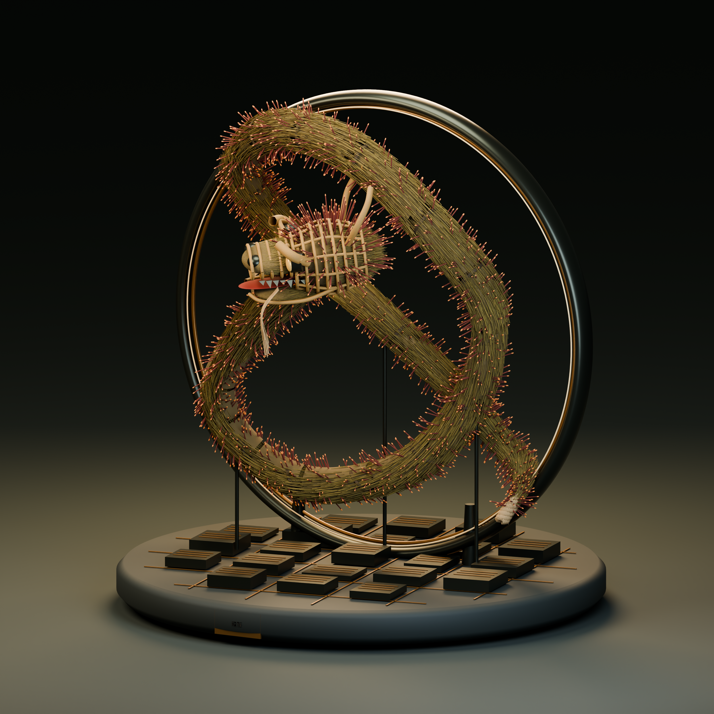

桌上非遺記憶燈
數碼化香港非遺 ／ 設計原型 01

觸碰工藝，循光讀懂傳承。
從街頭盛會，到日常可以凝望的文化記憶。
使用者提供作品名稱、核心概念及詳細規格；ChatGPT／Codex 參與造型細化、文化資料整理、程式建模、材質、介面及文案，參與程度高。參賽前須補上本人研究、獨立修改紀錄，並如實披露工具。
GLB 已由 Blender 成功匯入並渲染三視圖。測試環境停用 WebGL，立體互動及 iPad 觸控仍待實機驗證。此為數碼燈具概念，未完成電氣、散熱或實體承力測試。
文化資料核對：2026年9月18日。月輪、雙環曲線、流光、支架、草束數量及底座皆為現代設計設定。字章為設計提案，非古文字考據。